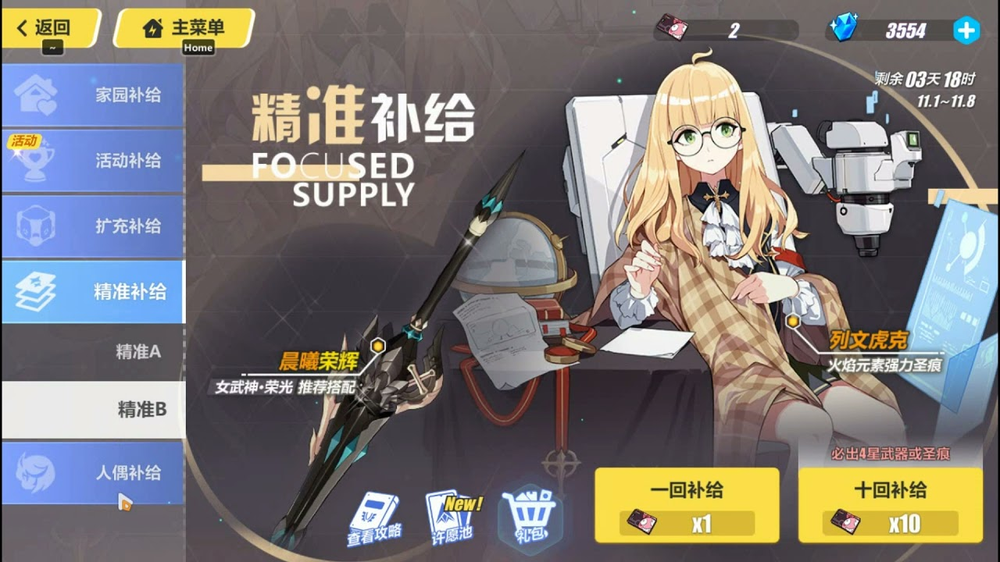

Guía para banners.
Descripcion de un banner
Un banner en honkai es un apartado el cual nos permitira conseguir valkirias y equipamiento facilmente
Es importante recordar que hay varias formas de conseguir estos recursos pero esta es la más importante que tenemos

Banners
En este video tendras una liga para poder ver un video acerca de la tier list de las mejores valkirias para empezar
Regresar a index
Regresar a la guia de novatos